|
Roda JC - Excelsior (2-3) 5 oktober 2002 |
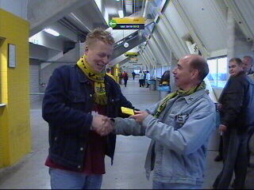
Marco, winnaar van de eerste officieuze RML
prijsvraag
wint een heerlijke reep melkchocolade
met een romige
vulling.
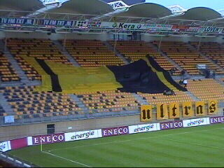
WSU had geïnvesteerd in 500 m2 textiel.
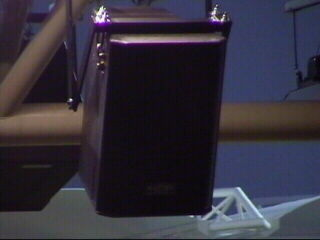
De nieuwe geluidsinstallatie!!!
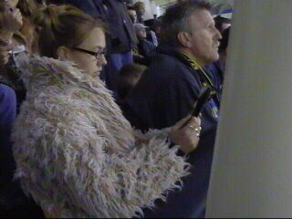
Schaapje leest aandachtig programmablaadje.
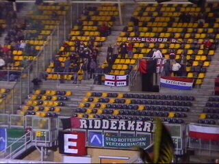
Toch nog 30 man uit Rotterdam.
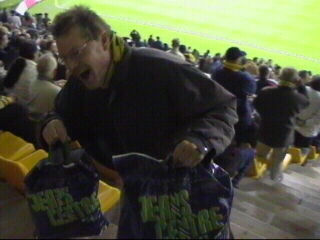
Loemeleeeee....
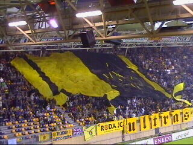
De nieuwe vlag zeilt over west.
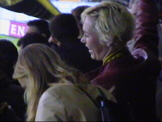
Twee vrolijke Z16-meisjes.
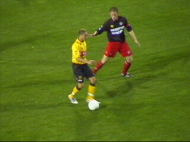
Sergio met aan zijn schoenen aangepaste coupe.
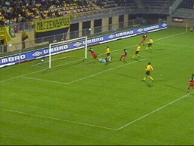
Hoewel Roda een optisch overwicht had was het
Lopes
die in de 16e min. het fris en speels
combinerende
Excelsior op een voorsprong zette.
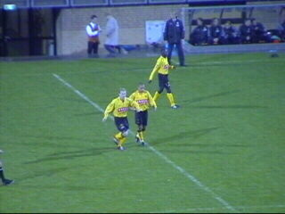
Berglund maakt de gelijkmaker (62').
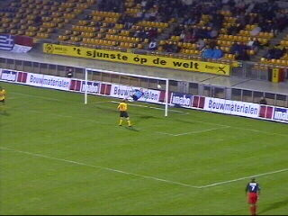
In de 68e min. scoort Lopes zijn tweede.
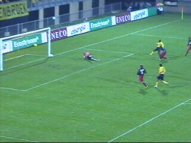
Super Sonko schiet op de paal.
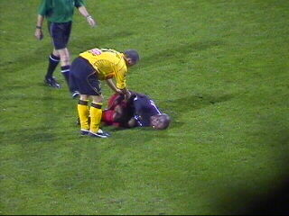
Excelsiorspelers krijgen last van vallende ziekte.
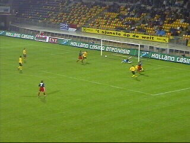
Koswal scoort 1-3 (83').
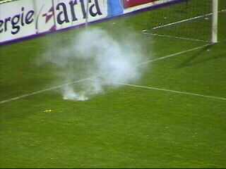
Bij west vliegt een knaller het veld op.
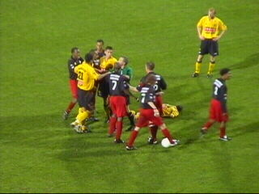
Opstootje nog waarbij Mtiliga een rode kaart krijgt.
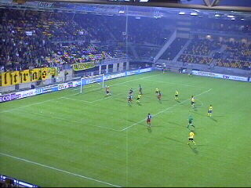
Super Sonko scoort 2-3.
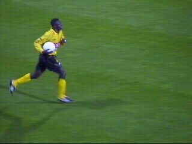
Er is nog maar weinig tijd...
Helaas gaat de wedstrijd verloren met 2-3.
Luijpers was met Collinet in de Kick Off. Hier
wordt de
jarige Luijpers gefeliciteerd door
Koempelin.
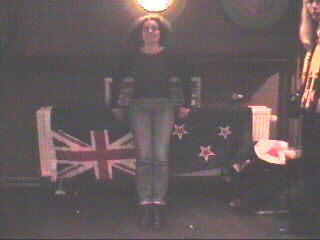
Flashgirl pronkt nog even met haar Vicelichvaan.